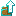
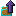

更多箱子 Iron Chests
共 24 个条目 · ironchest
版本: 1.21-neoforge-16.0.7 · 来源: ironchest-1.21-neoforge-16.0.7.jar
New chests with larger sizes, with in-place upgrade items.
The feature chest is the crystal chest, which is transparent - some inventory contents are visible without opening the chest.
MC百科中文名: 更多箱子
MC百科页面: https://www.mcmod.cn/class/20.html（更多箱子 (IronChests)）
MC百科检索: site:mcmod.cn Iron Chests
官方介绍 （Modrinth · 中文版由 GLM AI 翻译，仅供参考）
Iron Chests for Fabric（铁箱子）是一个简单的模组，它通过添加新的、可升级的箱子来增强你的 Minecraft 游戏体验，让你能在单个方块中存储更多物品。
每种箱子都可以升级，从木箱（原版 Minecraft 的箱子）开始。你只需合成一个箱子升级道具，然后对想要升级的箱子按下 SHIFT + 右键即可。这样就不用破坏已经放好的箱子了。别担心，箱子会保留里面的物品。
模组前置
箱子升级
圣诞箱：27 格
铜箱：45 格
铁箱：54 格
金箱：81 格
绿宝石箱：108 格
钻石箱：108 格
水晶箱：108 格
黑曜石箱：108 格
由 GLM AI 翻译，仅供参考
查看英文原文（Modrinth）
Iron Chests for Fabric is a simple mod that enhances your Minecraft Gameplay by adding new, upgradable chests, that will allow you to store more items in a single block.
Each Chest can be upgraded, starting from the Wooden Chest (Vanilla Minecraft). By doing so you will just need to craft a Chest Upgrade, and SHIFT + RIGHT_CLICK the chest you want to upgrade. This will avoid the need to break the already placed chest. Do not worry, the chest will keep its inventory.
Mod Requirements
Chest Upgrades
Christmas: 27 Slots
Copper: 45 Slots
Iron: 54 Slots
Gold: 81 Slots
Emerald: 108 Slots
Diamond: 108 Slots
Crystal: 108 Slots
Obsidian: 108 Slots
资料来源：Iron Chests
物品与方块
 铜箱子
铜箱子ironchest:copper_chest · 方块升级：铜>铁
ironchest:copper_to_iron_chest_upgrade · 物品?升级：铜>银
ironchest:copper_to_silver_chest_upgrade · 物品
水晶箱子ironchest:crystal_chest · 方块
 钻石箱子
钻石箱子ironchest:diamond_chest · 方块

升级：钻石>水晶ironchest:diamond_to_crystal_chest_upgrade · 物品

升级：钻石>黑曜石ironchest:diamond_to_obsidian_chest_upgrade · 物品
 泥箱子9000!
泥箱子9000!ironchest:dirt_chest · 方块
 金箱子
金箱子ironchest:gold_chest · 方块
 升级：金>钻石
升级：金>钻石ironchest:gold_to_diamond_chest_upgrade · 物品
 铁箱子
铁箱子ironchest:iron_chest · 方块升级：铁>金
ironchest:iron_to_gold_chest_upgrade · 物品
 黑曜石箱子
黑曜石箱子ironchest:obsidian_chest · 方块?银箱子
ironchest:silver_chest · 方块?升级：银>金
ironchest:silver_to_gold_chest_upgrade · 物品
Trapped Copper Chestironchest:trapped_copper_chest · 方块
Trapped Crystal Chestironchest:trapped_crystal_chest · 方块
Trapped Diamond Chestironchest:trapped_diamond_chest · 方块
Trapped DirtChest 9000!ironchest:trapped_dirt_chest · 方块
Trapped Gold Chestironchest:trapped_gold_chest · 方块
Trapped Iron Chestironchest:trapped_iron_chest · 方块
Trapped Obsidian Chestironchest:trapped_obsidian_chest · 方块
 升级：木>铜
升级：木>铜ironchest:wood_to_copper_chest_upgrade · 物品
 升级：木>铁
升级：木>铁ironchest:wood_to_iron_chest_upgrade · 物品